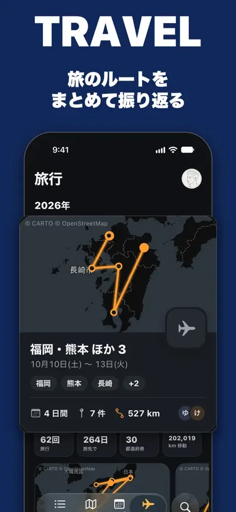
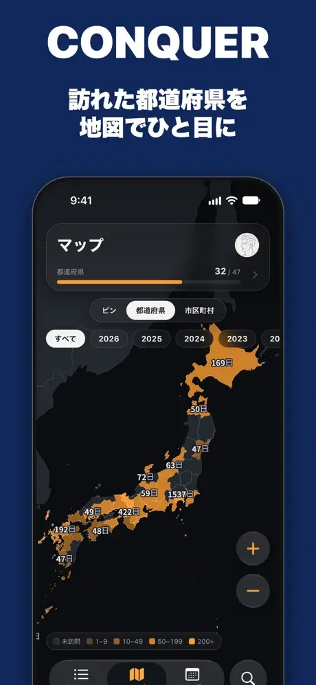
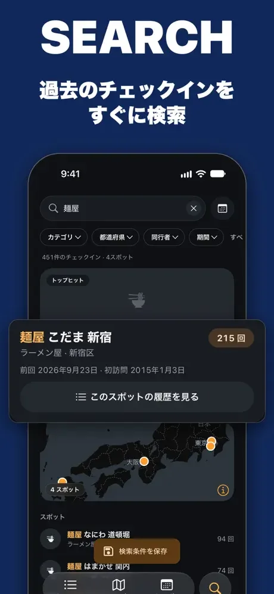

Mobile App — iOS / Android
Swarmlytics
Swarmのチェックイン履歴を地図・カレンダー・旅行の記録として振り返れるアプリ。データは端末内に保存され、すべての機能を無料で使えます。
- Role
- 企画・デザイン・開発・リリース
- Year
- 2026
- Stack
- Expo, React Native, TypeScript, SQLite, Foursquare API, Cloudflare Workers
- Language
- 日本語・英語・スペイン語・韓国語・ポルトガル語




01 — 背景
公式アプリへの改善をフォーラムでリクエストしても、なかなか実現しませんでした。検索もしにくかったので、ヘビーユーザーである自分自身をProduct Ownerとして開発を始めました。構想6年、手動での実装2年、AIを使い始めてからリリースまでは1週間です。
02 — 主な機能
- 地図 チェックインを地図上に表示。行動範囲の広がりや、よく行くエリアがひと目でわかります。
- カレンダー 月ごとのカレンダーで、どの日にチェックインしたかを見渡せます。
- 旅行の自動集計 自宅を離れていた日が続いた期間を1つの旅行にまとめ、ルート・訪問先・日数・移動距離を表示します。
- 同行者ランキング 一緒にチェックインした人をランキングで表示します。
- 検索とフィルター 店名やひとことで検索し、カテゴリ・エリア・同行者・期間で絞り込めます。
03 — 設計のポイント
04 — 技術構成
Expo（Dev Client）と Expo Router、React Native、TypeScript で iOS・Android アプリを作っています。アプリ・公式サイト・分析ロジック（packages/core）は、bun workspaces のモノレポで管理しています。
チェックインは Foursquare API から取得し、端末の SQLite（expo-sqlite）にだけ保存します。地図は MapLibre、UI は React Native Paper です。
ログインは OAuth の Authorization Code Flow です。client_secret はアプリに持たせず、Cloudflare Workers 上のコールバックでトークンに交換します。トークンはアプリが用意した使い捨ての公開鍵で封をして返し、expo-secure-store に保存しています。
公式サイトは Astro で作り、main への push で Cloudflare Workers に自動デプロイしています。アプリのビルドとストア提出は EAS と fastlane で行い、GitHub でリリースを公開すると EAS Update で OTA 配信します。